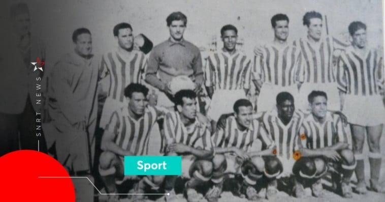
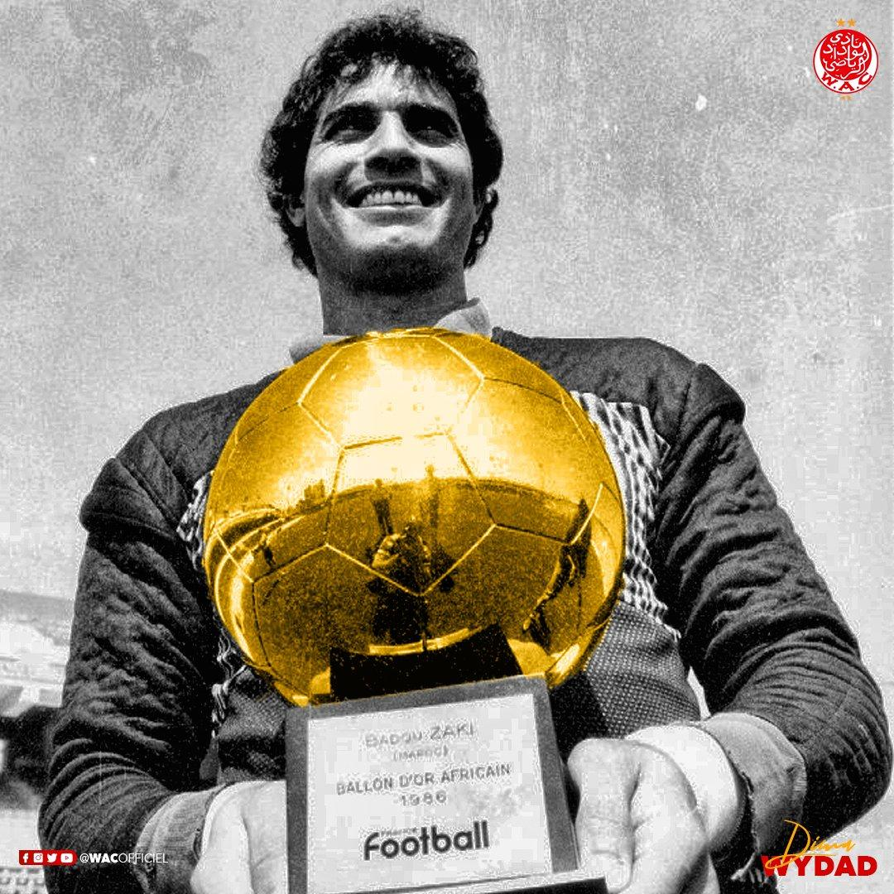
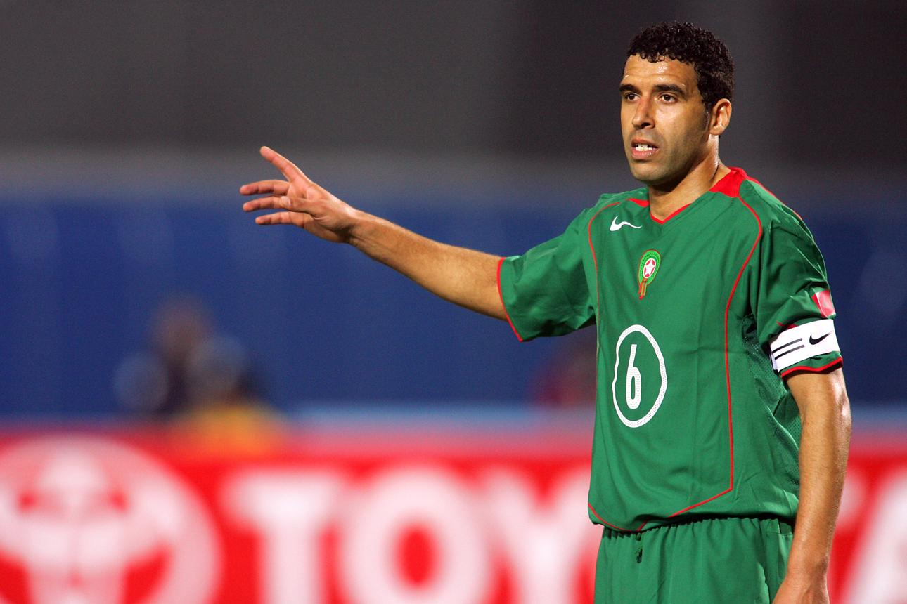

📖 L'histoire du Wydad (WAC)

La naissance du club (1937)
Le Wydad Athletic Club a été créer le 8 mai 1937, pendant la période du protectorat français au Maroc. Sa création était également un symbole d'identité nationale et de résistance. Le club a commencé par le water-polo, avant de créer sa section football en 1939.
🏆 Le palmarès du Wydad
- 22 Championnats du Maroc
- 9 Coupes du Trône
- 3 Ligues des champions CAF
- 1 Supercoupe de la CAF
🏅 Les joueurs légendaires
Badou Zaki

Noureddine Naybet

Yassine Bounou